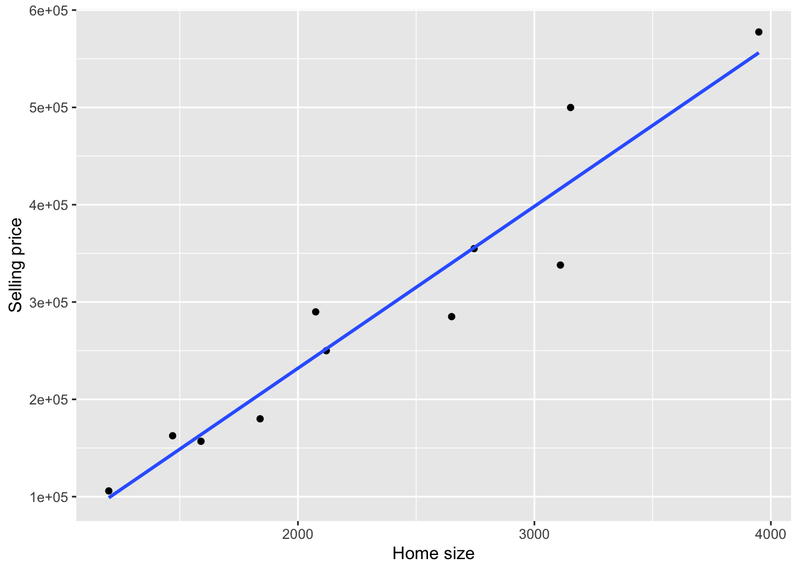
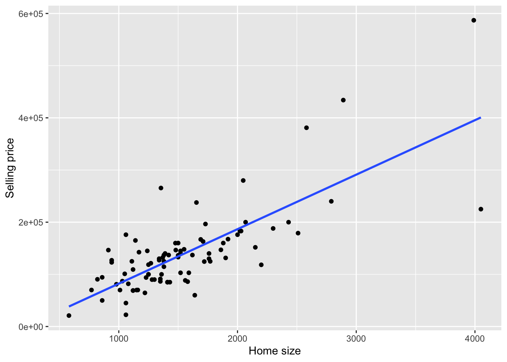

Code
library(tidyverse)
library(ggplot2)
library(dplyr)
library(readxl)
library(alr4)
library(smss)
knitr::opts_chunk$set(echo = TRUE)Abigail Balint
April 24, 2023
[1] 107296[1] 37704The predicted selling price is 107296. To find the residual, I am subtracting what it sold for from the predicted price. This means our prediction was low and the house sold for 37704 more than was predicted.
It is predicted to increase 53.8 dollars per square foot as this is the coefficient in the equation for home size square footage.
I think because the coefficient for home size is so much bigger than lot size, if we divide the coefficients by each other that would give the amount of home square feet we would need to have the same impact of one square foot in lot size, so 18.94 sq feet.
degree rank sex year ysdeg
Masters:34 Asst :18 Male :38 Min. : 0.000 Min. : 1.00
PhD :18 Assoc:14 Female:14 1st Qu.: 3.000 1st Qu.: 6.75
Prof :20 Median : 7.000 Median :15.50
Mean : 7.481 Mean :16.12
3rd Qu.:11.000 3rd Qu.:23.25
Max. :25.000 Max. :35.00
salary
Min. :15000
1st Qu.:18247
Median :23719
Mean :23798
3rd Qu.:27258
Max. :38045
Two Sample t-test
data: male$salary and female$salary
t = 1.8474, df = 50, p-value = 0.0706
alternative hypothesis: true difference in means is not equal to 0
95 percent confidence interval:
-291.257 6970.550
sample estimates:
mean of x mean of y
24696.79 21357.14
Call:
lm(formula = salary ~ degree + rank + sex + year + ysdeg, data = salary)
Residuals:
Min 1Q Median 3Q Max
-4045.2 -1094.7 -361.5 813.2 9193.1
Coefficients:
Estimate Std. Error t value Pr(>|t|)
(Intercept) 15746.05 800.18 19.678 < 2e-16 ***
degreePhD 1388.61 1018.75 1.363 0.180
rankAssoc 5292.36 1145.40 4.621 3.22e-05 ***
rankProf 11118.76 1351.77 8.225 1.62e-10 ***
sexFemale 1166.37 925.57 1.260 0.214
year 476.31 94.91 5.018 8.65e-06 ***
ysdeg -124.57 77.49 -1.608 0.115
---
Signif. codes: 0 '***' 0.001 '**' 0.01 '*' 0.05 '.' 0.1 ' ' 1
Residual standard error: 2398 on 45 degrees of freedom
Multiple R-squared: 0.855, Adjusted R-squared: 0.8357
F-statistic: 44.24 on 6 and 45 DF, p-value: < 2.2e-16c: degree: Degree has a positive coefficient but not a significant p-value, indicating as degree increases salary does as well but not at a statistically significant level. rank: Rank has a very high positive coefficient as well as being very statistically significant, indicating a strong relationship between this variable and salary. sex: Similarly to degree, sex has a positive coefficient but not a significant p-value, indicating a positive slope here but not a statistically significant level. year: This variable is statistically significant with a positive slope indicating more years in a current rank may increase salary. ysdeg: This variable is not significant and actually has a negative slope/coefficient.
d: When I relevel rank I can see that it flips rank to have a negative slope/coefficient now instead of a positive one.
[1] "Asst" "Assoc" "Prof"
Call:
lm(formula = salary ~ degree + rankrl + sex + year + ysdeg, data = salary)
Residuals:
Min 1Q Median 3Q Max
-4045.2 -1094.7 -361.5 813.2 9193.1
Coefficients:
Estimate Std. Error t value Pr(>|t|)
(Intercept) 26864.81 1375.29 19.534 < 2e-16 ***
degreePhD 1388.61 1018.75 1.363 0.180
rankrlAsst -11118.76 1351.77 -8.225 1.62e-10 ***
rankrlAssoc -5826.40 1012.93 -5.752 7.28e-07 ***
sexFemale 1166.37 925.57 1.260 0.214
year 476.31 94.91 5.018 8.65e-06 ***
ysdeg -124.57 77.49 -1.608 0.115
---
Signif. codes: 0 '***' 0.001 '**' 0.01 '*' 0.05 '.' 0.1 ' ' 1
Residual standard error: 2398 on 45 degrees of freedom
Multiple R-squared: 0.855, Adjusted R-squared: 0.8357
F-statistic: 44.24 on 6 and 45 DF, p-value: < 2.2e-16e.When I take rank out of the model, year and ysdeg now have a p-value that is statistically significant (a drastic change).
Call:
lm(formula = salary ~ degree + sex + year + ysdeg, data = salary)
Residuals:
Min 1Q Median 3Q Max
-8146.9 -2186.9 -491.5 2279.1 11186.6
Coefficients:
Estimate Std. Error t value Pr(>|t|)
(Intercept) 17183.57 1147.94 14.969 < 2e-16 ***
degreePhD -3299.35 1302.52 -2.533 0.014704 *
sexFemale -1286.54 1313.09 -0.980 0.332209
year 351.97 142.48 2.470 0.017185 *
ysdeg 339.40 80.62 4.210 0.000114 ***
---
Signif. codes: 0 '***' 0.001 '**' 0.01 '*' 0.05 '.' 0.1 ' ' 1
Residual standard error: 3744 on 47 degrees of freedom
Multiple R-squared: 0.6312, Adjusted R-squared: 0.5998
F-statistic: 20.11 on 4 and 47 DF, p-value: 1.048e-09Below I am making a new variable that is if there is more than 15 years since highest degree they are assigned yes, otherwise no. I can see when fitting a model against salary this is very statistically significant, indicating the dean may have had an impact.
Call:
lm(formula = salary ~ ysdeg15, data = salary2)
Residuals:
Min 1Q Median 3Q Max
-8294 -3486 -1772 3829 10576
Coefficients:
Estimate Std. Error t value Pr(>|t|)
(Intercept) 20125.9 913.4 22.033 < 2e-16 ***
ysdeg15yes 7343.5 1291.8 5.685 6.73e-07 ***
---
Signif. codes: 0 '***' 0.001 '**' 0.01 '*' 0.05 '.' 0.1 ' ' 1
Residual standard error: 4658 on 50 degrees of freedom
Multiple R-squared: 0.3926, Adjusted R-squared: 0.3804
F-statistic: 32.32 on 1 and 50 DF, p-value: 6.734e-07 case Taxes Beds Baths New
Min. : 1.00 Min. : 20 Min. :2 Min. :1.00 Min. :0.00
1st Qu.: 25.75 1st Qu.:1178 1st Qu.:3 1st Qu.:2.00 1st Qu.:0.00
Median : 50.50 Median :1614 Median :3 Median :2.00 Median :0.00
Mean : 50.50 Mean :1908 Mean :3 Mean :1.96 Mean :0.11
3rd Qu.: 75.25 3rd Qu.:2238 3rd Qu.:3 3rd Qu.:2.00 3rd Qu.:0.00
Max. :100.00 Max. :6627 Max. :5 Max. :4.00 Max. :1.00
Price Size
Min. : 21000 Min. : 580
1st Qu.: 93225 1st Qu.:1215
Median :132600 Median :1474
Mean :155331 Mean :1629
3rd Qu.:169625 3rd Qu.:1865
Max. :587000 Max. :4050
Call:
lm(formula = Price ~ New + Size, data = house)
Residuals:
Min 1Q Median 3Q Max
-205102 -34374 -5778 18929 163866
Coefficients:
Estimate Std. Error t value Pr(>|t|)
(Intercept) -40230.867 14696.140 -2.738 0.00737 **
New 57736.283 18653.041 3.095 0.00257 **
Size 116.132 8.795 13.204 < 2e-16 ***
---
Signif. codes: 0 '***' 0.001 '**' 0.01 '*' 0.05 '.' 0.1 ' ' 1
Residual standard error: 53880 on 97 degrees of freedom
Multiple R-squared: 0.7226, Adjusted R-squared: 0.7169
F-statistic: 126.3 on 2 and 97 DF, p-value: < 2.2e-16Prediction equation for new: y=-40230.867 + 57736.283new + 116.132size
3000 square feet for new vs not:
[1] 365901.4[1] 308165.1Selling price of new: 365901.4 Selling price of not new: 308165.1
Call:
lm(formula = Price ~ New * Size, data = house)
Residuals:
Min 1Q Median 3Q Max
-175748 -28979 -6260 14693 192519
Coefficients:
Estimate Std. Error t value Pr(>|t|)
(Intercept) -22227.808 15521.110 -1.432 0.15536
New -78527.502 51007.642 -1.540 0.12697
Size 104.438 9.424 11.082 < 2e-16 ***
New:Size 61.916 21.686 2.855 0.00527 **
---
Signif. codes: 0 '***' 0.001 '**' 0.01 '*' 0.05 '.' 0.1 ' ' 1
Residual standard error: 52000 on 96 degrees of freedom
Multiple R-squared: 0.7443, Adjusted R-squared: 0.7363
F-statistic: 93.15 on 3 and 96 DF, p-value: < 2.2e-16`geom_smooth()` using formula 'y ~ x'
Plot for not new:
`geom_smooth()` using formula 'y ~ x'
Same answer as C I think.
Now doing this for 1500 sf I got the same result. Is thi s because the new vs not new coefficient holds so much weight here?
[1] 365901.4[1] 308165.1---
title: "Homework 4"
author: "Abigail Balint"
desription: "HW4 Responses"
date: "04/24/23"
format:
html:
toc: true
code-fold: true
code-copy: true
code-tools: true
categories:
- hw4
- homework4
- abigailbalint
---
```{r}
#| label: setup
#| warning: false
library(tidyverse)
library(ggplot2)
library(dplyr)
library(readxl)
library(alr4)
library(smss)
knitr::opts_chunk$set(echo = TRUE)
```
# Question 1
a) Equation: ŷ = −10,536 + 53.8x1 + 2.84x2
Subbing the size of home and lot size out for the variables in the equation:
ŷ = −10,536 + 53.8(1240) + 2.84(18000)
solving for y:
```{r}
a = -10536 + (53.8*1240) + (2.84*18000)
print(a)
a2=145000-a
print(a2)
```
The predicted selling price is 107296. To find the residual, I am subtracting what it sold for from the predicted price. This means our prediction was low and the house sold for 37704 more than was predicted.
b) It is predicted to increase 53.8 dollars per square foot as this is the coefficient in the equation for home size square footage.
c) I think because the coefficient for home size is so much bigger than lot size, if we divide the coefficients by each other that would give the amount of home square feet we would need to have the same impact of one square foot in lot size, so 18.94 sq feet.
```{r}
c=53.8/2.84
print(c)
```
# Question 2
```{r}
summary(salary)
```
a) The p value is .07 so we fail to reject the null hypothesis and are not able to say there is a significant difference in male vs female salaries.
```{r}
male <- salary %>%
filter(sex == "Male")
female <- salary %>%
filter(sex == "Female")
t.test(male$salary, female$salary, var.equal = TRUE)
```
b) Fitting model and summary below:
```{r}
model1 <- lm(salary ~ degree + rank + sex + year + ysdeg, data = salary)
summary(model1)
```
c:
degree: Degree has a positive coefficient but not a significant p-value, indicating as degree increases salary does as well but not at a statistically significant level.
rank: Rank has a very high positive coefficient as well as being very statistically significant, indicating a strong relationship between this variable and salary.
sex: Similarly to degree, sex has a positive coefficient but not a significant p-value, indicating a positive slope here but not a statistically significant level.
year: This variable is statistically significant with a positive slope indicating more years in a current rank may increase salary.
ysdeg: This variable is not significant and actually has a negative slope/coefficient.
d: When I relevel rank I can see that it flips rank to have a negative slope/coefficient now instead of a positive one.
```{r}
levels(salary$rank)
rankrl <- relevel(salary$rank, ref="Prof")
model2 <- lm(salary ~ degree + rankrl + sex + year + ysdeg, data = salary)
summary(model2)
```
e.When I take rank out of the model, year and ysdeg now have a p-value that is statistically significant (a drastic change).
```{r}
model3 <- lm(salary ~ degree + sex + year + ysdeg, data = salary)
summary(model3)
```
f. To avoid multicollinearity, I don't think we should use year and ysdeg both within the model since we now know there is an interaction due to the new dean 15 years ago that could cause these two variables to be related.
Below I am making a new variable that is if there is more than 15 years since highest degree they are assigned yes, otherwise no. I can see when fitting a model against salary this is very statistically significant, indicating the dean may have had an impact.
```{r}
salary2 <- salary %>%
mutate(ysdeg15 = ifelse(ysdeg > 15, "yes", "no"))
model4 <- lm(salary ~ ysdeg15, data = salary2)
summary(model4)
```
# Question 3
```{r}
library(smss)
data("house.selling.price")
house <- house.selling.price
summary(house)
```
a) Based on this model, both whether it is new or not and the size are statistically significant variables in predicting price, although size is much more significant with a much smaller p value, the positive coefficient for whether the home is new or not is much higher.
```{r}
model5 <- lm(Price ~ New + Size, data = house)
summary(model5)
```
b) Prediction equation for new:
y=-40230.867 + 57736.283*new + 116.132*size
c) 3000 square feet for new vs not:
```{r}
new <- -40230.867 + 57736.283*1 + 116.132*3000
print (new)
notnew <- -40230.867 + 57736.283*0 + 116.132*3000
print(notnew)
```
Selling price of new: 365901.4
Selling price of not new: 308165.1
d) Fitting model with interaction:
```{r}
model6 <- lm(Price ~ New*Size, data = house)
summary(model6)
```
e) Plot for new:
```{r}
housenew <- house %>%
filter(New==1)
ggplot(data = housenew, aes(x = Size, y = Price)) +
geom_point() +
labs(x = "Home size", y = "Selling price") +
geom_smooth(method = "lm", se = FALSE)
```
Plot for not new:
```{r}
housenotnew <- house %>%
filter(New==0)
ggplot(data = housenotnew, aes(x = Size, y = Price)) +
geom_point() +
labs(x = "Home size", y = "Selling price") +
geom_smooth(method = "lm", se = FALSE)
```
f) Same answer as C I think.
g) c) 300 square feet for new vs not was:
Selling price of new: 365901.4
Selling price of not new: 308165.1
Now doing this for 1500 sf I got the same result. Is thi s because the new vs not new coefficient holds so much weight here?
```{r}
new2 <- -40230.867 + 57736.283*1 + 116.132*1500
print (new)
notnew2 <- -40230.867 + 57736.283*0 + 116.132*1500
print(notnew)
```
h) I would use the model without interaction here because since the new vs not is so strong I feel like it overpowers the size variable and it makes more sense to look at them separately.